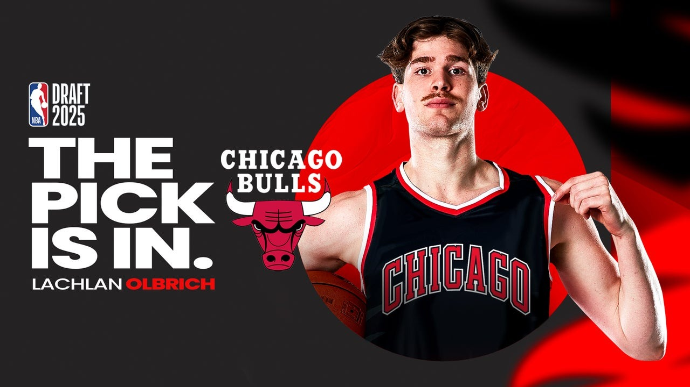
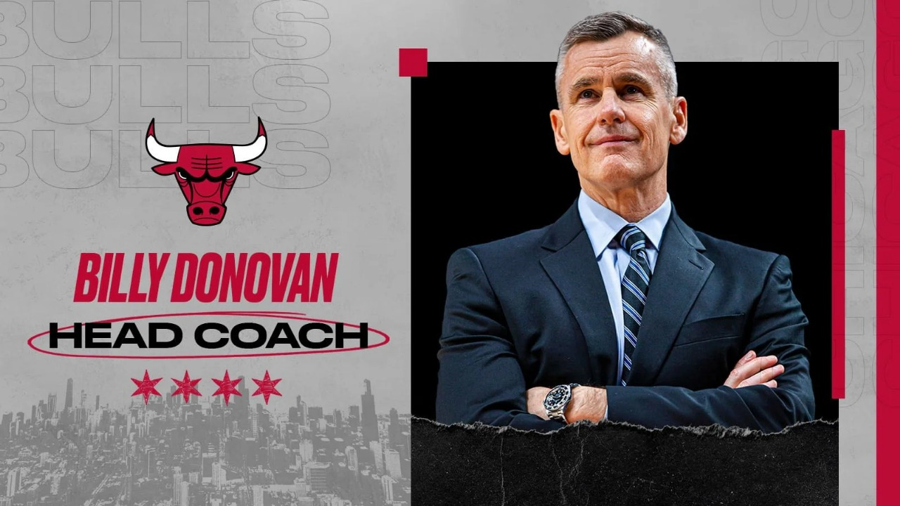
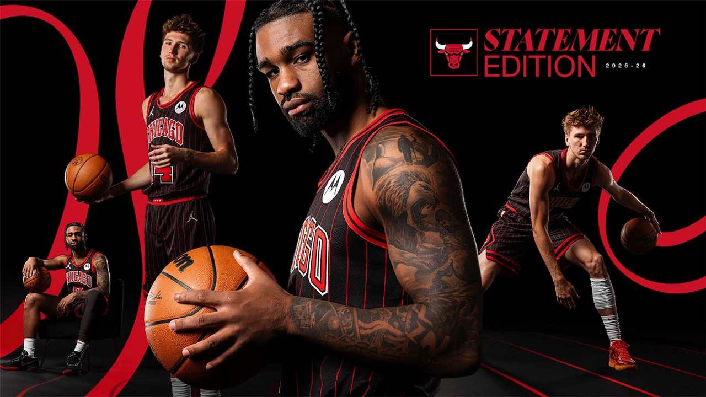

Los Bulls seleccionan a Lachlan Olbrich en el Draft 2025
En el segundo round del Draft 2025, los Bulls hicieron un
movimiento: intercambiaron el pick No. 45 con los Lakers para
obtener el pick No. 55, con el que seleccionaron al interno
australiano Lachlan Olbrich. Este jugador aporta altura (6'10") y
se une al proyecto joven del equipo.

Billy Donovan seguirá como entrenador de los Bulls en 2025-26
A pesar del interés de otros equipos, como los New York Knicks,
los Bulls rechazaron que entrevistaran a Billy Donovan. Se espera
que Donovan continúe al frente del equipo en la temporada 2025-26.

Chicago Bulls anuncia nuevo uniforme Statement con rayas rojas
para la temporada 2025-26
Los Bulls revelaron su diseño "Statement Edition" para 2025-26
inspirado en sus uniformes con rayas rojas de 1995-97. El nuevo
uniforme combina elementos clásicos (rayas, diseño de diamante en
los costados de los pantalones) con detalles modernos: tiene
palabra "Chicago" en el pecho, ribetes rojos y negros, y estrellas
del escudo de Chicago en la cintura del short.